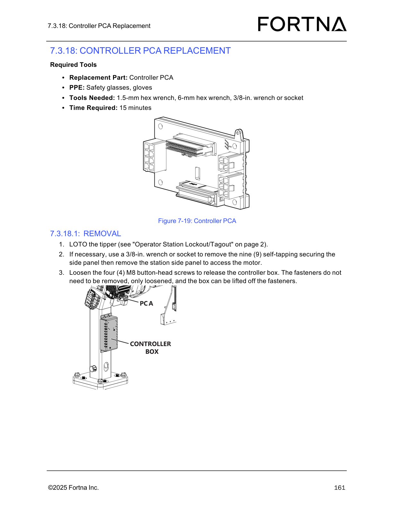

| Procedure ID | proc_remove_controller_pca_assembly_access_components_and_release_controller_box_v1 |
|---|---|
| Title | Remove the controller PCA assembly access components and release the controller box |
| Procedure Type | recovery |
| Primary Role | L2_support |
| Support Safe | Yes |
| Validation Status | needs_sme_review |
| Merge Status | source_finalized |
Safely prepare for controller PCA replacement by gathering the specified tools and PPE, locking out/tagging out the tipper, removing the station side panel if needed for access, loosening the controller box mounting screws without removing them, and lifting the controller box off the loosened fasteners.
Use this procedure when performing the removal/access portion of Controller PCA replacement and access to the controller box is required.
Responsible role: L2_support
Instruction:
Gather the replacement Controller PCA, safety glasses, gloves, a 1.5-mm hex wrench, a 6-mm hex wrench, and a 3/8-in. wrench or socket.
Expected result:
All listed PPE, tools, and the replacement Controller PCA are available at the work area.
Screens / Images:

Stop or Escalate If:
Responsible role: L2_support
Instruction:
LOTO the tipper as referenced by "Operator Station Lockout/Tagout" on page 2.
Expected result:
The tipper is locked out/tagged out and safe for maintenance access.
Stop or Escalate If:
Responsible role: L2_support
Instruction:
If necessary to gain access, use a 3/8-in. wrench or socket to remove the nine self-tapping fasteners securing the station side panel, then remove the station side panel to access the motor.
Expected result:
The station side panel is removed when needed, providing access to the internal service area.
Screens / Images:
Stop or Escalate If:
Responsible role: L2_support
Instruction:
Loosen the four M8 button-head screws to release the controller box; do not remove the fasteners.
Expected result:
The controller box is released from the mounting points while the fasteners remain in place.
Screens / Images:
Stop or Escalate If:
Responsible role: L2_support
Instruction:
Lift the controller box off the loosened fasteners.
Expected result:
The controller box is free of the loosened fasteners and accessible for the next stage of controller PCA replacement work.
Screens / Images:
Stop or Escalate If: